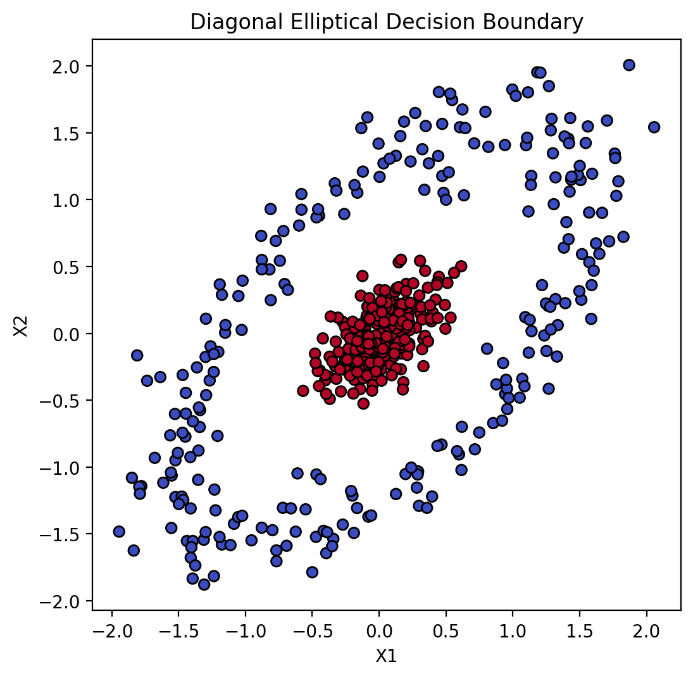
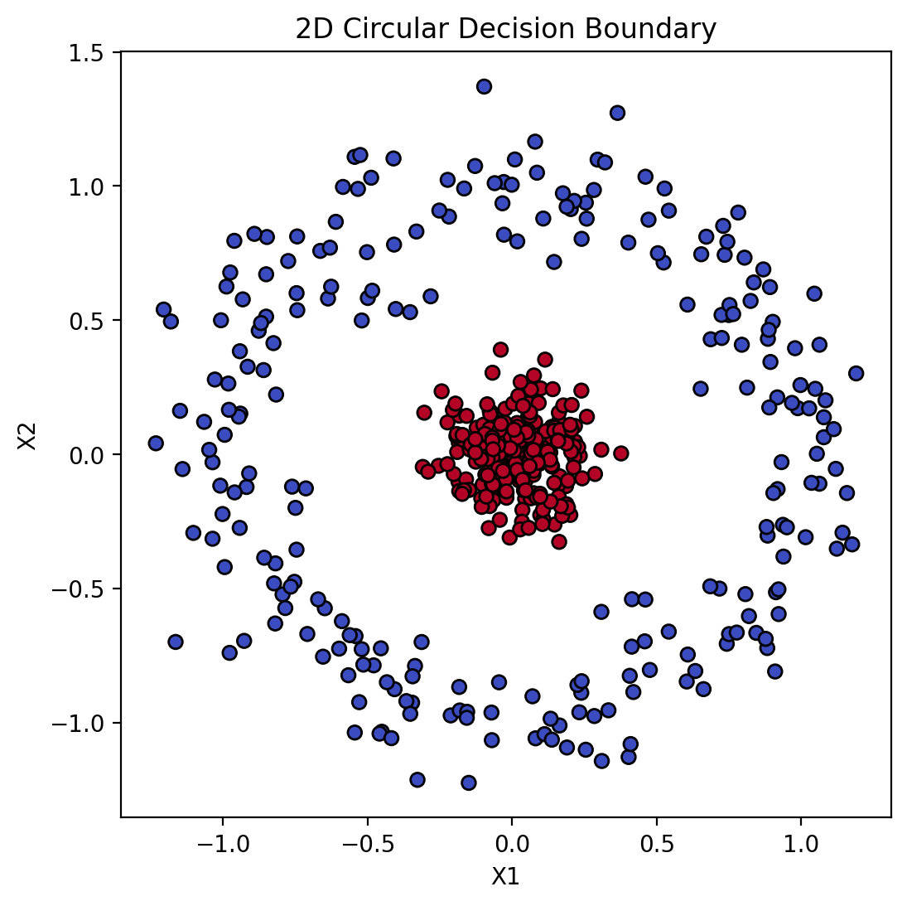

# numerical calculation & data framesimport numpy as npimport pandas as pd# visualizationimport matplotlib.pyplot as pltimport seaborn as snsimport seaborn.objects as so# statisticsimport statsmodels.api as sm# pandas optionspd.set_option('mode.copy_on_write', True) # pandas 2.0pd.options.display.float_format ='{:.2f}'.format# pd.reset_option('display.float_format')pd.options.display.max_rows =7# max number of rows to display# NumPy optionsnp.set_printoptions(precision =2, suppress=True) # suppress scientific notation# For high resolution displayimport matplotlib_inlinematplotlib_inline.backend_inline.set_matplotlib_formats("retina")
# scikit-learn으로 대각선 방향 타원형 결정 경계 데이터 생성from sklearn.datasets import make_circlesimport numpy as npX, y = make_circles(n_samples=500, factor=0.1, noise=0.12, random_state=42)X[:, 1] = X[:, 1] *2.0# y축 스케일 조정(타원)# 45도 회전 행렬 적용theta = np.deg2rad(-45)R = np.array([[np.cos(theta), -np.sin(theta)], [np.sin(theta), np.cos(theta)]])X = X @ R.T# 데이터 시각화plt.figure(figsize=(6, 6))plt.scatter(X[:, 0], X[:, 1], c=y, cmap='coolwarm', edgecolor='k')plt.title('Diagonal Elliptical Decision Boundary')plt.xlabel('X1')plt.ylabel('X2')plt.gca().set_aspect('equal', adjustable='box')

# scikit-learn으로 원형 결정 경계 데이터 생성from sklearn.datasets import make_circlesX, y = make_circles(n_samples=500, factor=0, noise=0.12, random_state=42)# X, y = make_circles(n_samples=500, factor=0.5, noise=0.05, random_state=42)# 데이터 시각화plt.figure(figsize=(6,6))plt.scatter(X[:,0], X[:,1], c=y, cmap='coolwarm', edgecolor='k')plt.title('2D Circular Decision Boundary')plt.xlabel('X1')plt.ylabel('X2')plt.show()

# fit a logistic regression modelfrom sklearn.linear_model import LogisticRegressionlog_reg = LogisticRegression()log_reg.fit(X, y)
LogisticRegression()
In a Jupyter environment, please rerun this cell to show the HTML representation or trust the notebook. On GitHub, the HTML representation is unable to render, please try loading this page with nbviewer.org.
/Users/skcho/miniconda3/envs/envconda/lib/python3.11/site-packages/sklearn/utils/validation.py:2732: UserWarning: X has feature names, but LogisticRegression was fitted without feature names
warnings.warn(
/Users/skcho/miniconda3/envs/envconda/lib/python3.11/site-packages/sklearn/utils/validation.py:2732: UserWarning: X has feature names, but LogisticRegression was fitted without feature names
warnings.warn(
/Users/skcho/miniconda3/envs/envconda/lib/python3.11/site-packages/sklearn/utils/validation.py:2732: UserWarning: X has feature names, but LogisticRegression was fitted without feature names
warnings.warn(
/Users/skcho/miniconda3/envs/envconda/lib/python3.11/site-packages/sklearn/utils/validation.py:2732: UserWarning: X has feature names, but LogisticRegression was fitted without feature names
warnings.warn(